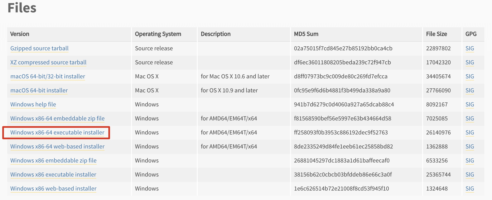

2 Python 环境安装
2.1 Python 解释器
2.1.1 解释器的作用
- Python解释器作用：运行文件
- Python解释器种类
- CPython：C语言开发的解释器(官方)，应用广泛的解释器
- IPython：基于CPython的一种交互式解释器
- 其他解释器
- PyPy：基于Python语言开发的解释器
- Jython：运行在Java平台的解释器，直接把Python代码编译成Java字节码执行
- IronPython：运行在微软.Net平台上的Python解释器，可以直接把Python代码编译成.Net的字节码
2.1.2 下载解释器
- 下载地址：https://www.python.org/downloads/release/python-372/
单击上述链接→查找目标文件：Windows x86-64 executable installer →单击即可下载

2.1.3 安装解释器
选择在path中配置python3.6环境变量，然后尊则现在安装

等待程序安装

选择关闭

- 注意：如果第一步未选择Add python 3.6 to Path，则需要手动配置环境变量
手动配置环境变量步骤
右键点击此电脑，选择属性选项

选择高级系统设置
选择环境变量
选择用户变量中的Path变量，点击编辑

双击打开我的电脑，在搜索栏输入python.exe并搜索找到对应搜索结果，有点选择打开文件所在位置
赋值python文件所在位置的完整路径

回到环境变量，选择新建，并将刚才赋值的路径填入其中
再次点击新建，将刚才的路径粘贴到其中，并在结尾添加
\Scripts
使用windows + R键调出运行窗口，输入cmd命令，点击确定

在命令行中输入python，并回车，如果出现如图所示版本信息即为配置完成
2.2 PyCharm
2.2.1 PyCharm 的作用
- PyCharm是一种Python IDE（集成开发环境），带有一整套可以帮助用户在使用Python语言开发时提高其效率的工具，内部集成的功能如下：
- Project管理
- 智能提示
- 语法高亮
- 代码跳转
- 调试代码
- 解释代码(解释器)
- 框架和库
- ......